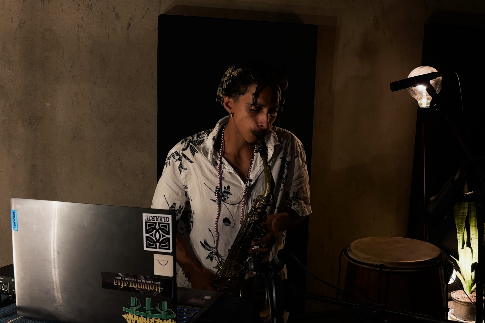
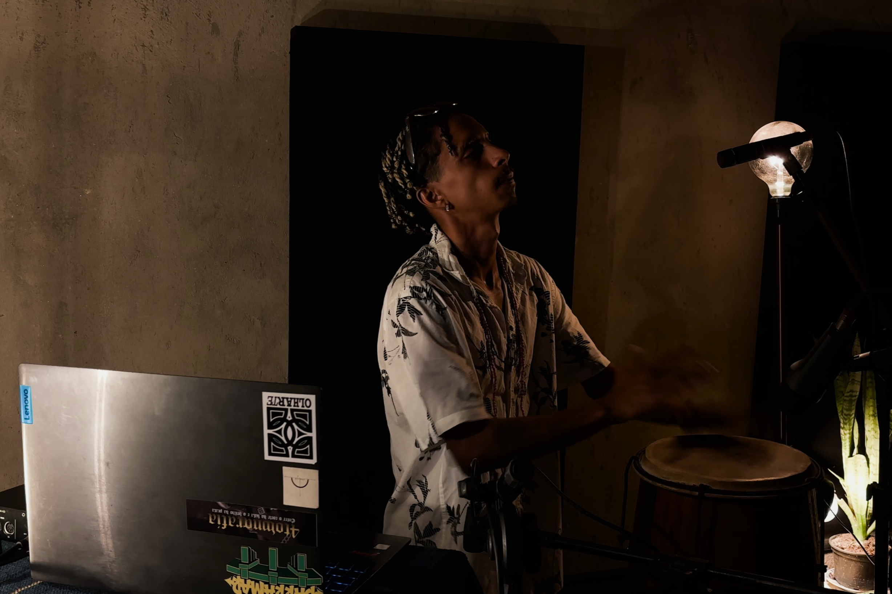

SONA apresenta DAVINCI
MACUMBA JAZZ E A FORÇA DA COMUNIDADE

A Barra do Ceará, bairro litorâneo da cidade de Fortaleza, é marcada por fronteiras históricas e manifestações populares. No século XVII, tropas invasoras do capitão-mor português Pero Coelho tentaram erguer uma fortaleza ali, mas encontraram a resistência de povos indígenas e comunidades negras, que se recusaram a ser apagadas. Essa história de confronto e sobrevivência afro-indígena permanece visível na vida cotidiana: rodas de capoeira nas praças, bailes de reggae, batalhas de rima nas calçadas. A Barra é, portanto, um território em que memória e invenção se entrelaçam, e foi nesse contexto que cresceu Davinci, artista que recentemente lançou Dominante das Ruas (2025), um álbum que cruza jazz, hip-hop e tradições afro-indígenas em narrativas fortemente ligadas à experiência local.
Na infância e adolescência, Davinci absorveu esse ambiente sonoro. O rap americano chegou até ele via rádios e pendrives compartilhados nas periferias, com nomes como Jay-Z e Akon. Entre as vertentes do rap, o boombap, com batidas secas e marcadas, se tornou sua primeira estrutura de composição. Nela, aprendeu a sincronizar palavra e ritmo, disciplina que mais tarde abriria caminho para diálogos instrumentais, sobretudo com o saxofone.
Aos poucos, seu repertório se expandiu para a música brasileira: samba, maracatu, bossa nova e canções populares abriram novas possibilidades. O ato de escrever letras evoluiu para a prática de improvisos vocais, que se estenderam a exercícios instrumentais. O jazz entrou como chave de expansão, não pelo virtuosismo técnico, mas pela dimensão espiritual de artistas como John Coltrane e Pharoah Sanders, que usavam o improviso como forma de oração. Davinci percebeu paralelos entre esse gesto e o que observava nos terreiros: música como chamada, música como ritual.

Seu nome, Davinci, remete à rua em que cresceu na Barra do Ceará. Adotar esse nome foi sua maneira de transformar uma geografia concreta em emblema sonoro, carregando consigo a história e o peso de uma comunidade. Esse processo de dar identidade a partir de experiências locais encontra paralelo em Mano Brown, expoente do rap brasileiro, cujo sobrenome artístico surgiu no samba, quando tocava repique de mão e improvisava versos inspirados por ritmos do funk americano de James Brown. Em ambos os casos, o nome nasce de uma prática cotidiana profundamente enraizada em um território ou tradição, seja a rua, seja o samba, que se projeta para além do local, carregando memória e potência de circulação.
Essa dimensão coletiva se aprofunda no coletivo Afrokaos, projeto que DaVinci fundou com outros artistas dentro do Selo do $.E.C.U.L.O, no bairro vizinho do Pirambu. O Afrokaos funciona como oficina permanente de experimentação: instrumentos reciclados, improvisações radicais e experimentações visuais se cruzam para criar paisagens sonoras únicas. O grupo combina tradição local com invenção de materiais e ritmos improvisados, transformando a prática coletiva em laboratório sonoro, onde cada encontro é oportunidade de repensar a relação entre som e território ancestral.
Essa ancestralidade é eixo central da obra de Davinci. Em sua entrevista à SONA, ele cita Mestre Pastinha, referência da capoeira angola, para quem a capoeira é “tudo que a boca come”. Essa frase, que à primeira vista soa como abstração metafórica, serve para ele como chave prática: a música, assim como a capoeira, é alimento, mas também é treino, disciplina e improviso. Em sua prática musical, isso aparece na combinação de rigor rítmico, herdado da cadência dos berimbaus e dos toques de tambor, com a abertura para improvisar e responder ao ambiente, como se cada performance fosse um jogo.
Esse jogo se conecta diretamente a tradições religiosas afro-indígenas. DaVinci menciona, por exemplo, o Terecô, prática religiosa afro-brasileira originária de Codó, Maranhão, que reúne elementos africanos (especialmente banto), indígenas e católicos. Também chamado Tambor da Mata, o Terecô ocorre em tendas dirigidas por um pai ou mãe de santo, onde os “encantados” (espíritos) se manifestam por meio de tambores, cantos e, em algumas cerimônias, saxofones. Para Davinci, observar o saxofone nesse contexto mostrou como improviso instrumental contemporâneo pode dialogar com práticas ancestrais, abrindo espaço para uma respeitosa reformulação do familiar. Para ele, cada rima exige responsabilidade, onde é preciso “saber chegar e saber sair” como em uma roda de capoeira. Esse cuidado conecta a tradição do mestre de cerimônia do hip-hop à oralidade africana e afro-brasileira, onde a palavra é energia transformadora.

Dominante das Ruas é, até agora, o ápice da trajetória de DaVinci. No álbum, beats de rap se entrelaçam com tambores litúrgicos, sintetizadores entram em diálogo com improvisos de saxofone, e vozes gravadas surgem como camadas que se atravessam. Nessa lógica de contraste, cada elemento provoca o outro, revelando a energia da ancestralidade que inspiram a música. Um paralelo contemporâneo pode ser encontrado em Brass (2020), de Billy Woods e Moor Mother, onde o hip-hop experimental se mistura a camadas densas de voz, ruído e referências históricas, mostrando como tradição negra e experimentação podem coexistir em tensão e diálogo, sem perder densidade política e poética.
O interesse atual de Davinci se concentra na zona de encontro que ele chama de “macumba jazz”, que em sua obra se manifesta como um modo de fazer o saxofone ressoar como prolongamento dos tambores, em que cada frase improvisada atua como gesto ritual, articulando ritmo, melodia e pausa para criar tensão e respiração na música. Na primeira faixa gravada para a SONA, Fora de Tabuleiro, essa abordagem se manifesta na alternância entre versos variados e a insistência da palavra “renasceu” sobre uma base de batuques, violão e sintetizadores, criando ciclos de expectativa e liberação que lembram os movimentos de um canto de terreiro ou de uma roda de capoeira. Cada improviso do sax interrompe ou responde à percussão, alternando entre momentos de diálogo e contraponto, como se a voz do instrumento convocasse a memória coletiva da comunidade sem sobrepor-se a ela.
Em Zona de Nagô, Davinci trabalha sobre loops eletrônicos cíclicos e luminosos, e a tensão se estabelece na relação entre tambor e sax. Enquanto a base repetitiva parece construir uma espécie de película resistente, os instrumentos acústicos buscam rompê-la. O tambor reforça certos pulsos e desafia outros, e o sax insere notas pontuais que atravessam a camada eletrônica. Essa prática transforma cada toque instrumental em um micro-ritual de diálogo entre tradição percussiva e invenção eletrônica, fazendo a música respirar como os encontros que inspiraram Davinci e refletindo a resistência e inventividade de suas origens.
Para ele, a música depende dos espaços de encontro comunitários, como os que vivenciou na Barra do Ceará: praças, terreiros, estúdios coletivos, batalhas de rap. Apesar das ameaças da especulação imobiliária e da sistêmica ausência de políticas culturais, esses lugares permanecem, como fontes de invenção e continuidade. Ele destaca ainda a importância de reconhecer que a periferia não é homogênea, e que cada bairro possui sua paisagem sonora, timbres e modos de narrar. O reconhecimento dessa diversidade orienta sua produção.
Além da resistência afro-indígena, a obra de Davinci também enfatiza a esperança. Da mesma forma que reflete sobre a violência e a exclusão, marcas histórica do hip-hop, ele entende que cantar a possibilidade de vida e de celebração também é um gesto necessário. Essa escolha não parte de ingenuidade, mas de uma estratégia consciente: afirmar positividade é herdar e atualizar uma lógica das tradições afro-diaspóricas, que sempre souberam transformar dor em criação. Foi assim com o blues, nascido da experiência de opressão no sul dos Estados Unidos; com o samba, que floresceu nas comunidades negras do Rio de Janeiro; e com o jazz espiritual e o rap, que fizeram da palavra e do improviso ferramentas de criação de mundo.
Ao se inscrever nessa linhagem, Davinci demonstra que sua música pode ser capaz de projetar mundos possíveis, cultivando experiências coletivas onde a resistência histórica e a imaginação a respeito do futuro coexistem. Seus arranjos e performances evocam histórias de luta e resistência da mesma forma que convidam ouvintes a imaginar caminhos diferentes. A música torna-se, assim, um espaço de encontro entre gerações, entre comunidades. Na interação entre ritmos locais, improvisação instrumental e poesia do rap, DaVinci constrói cenários sonoros que sugerem possibilidades de convivência e transformação social, mostrando que a arte pode ser, ao mesmo tempo, registro do passado e proposta de futuro.